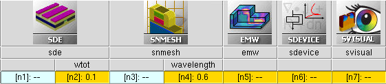

Sentaurus Device Electromagnetic Wave Solver
3. Integrating EMW in Sentaurus Workbench Tool Flow
3.1 Running EMW
3.2 Using EMW Results in Sentaurus Device
Objectives
- To describe how to run EMW from Sentaurus Workbench.
- To describe how to combine EMW simulation results with Sentaurus Device simulations.
3.1 Running EMW
There are two ways to run EMW:
- From the command line as shown in Section 1.1 Starting EMW.
- Having it as a tool within a Sentaurus Workbench project. Sentaurus Workbench will launch EMW automatically when a project is executed.
To add EMW to a Sentaurus Workbench project:
- Choose Tool > Add.
The Add Tool dialog box opens. - Click the Tools button.
- Select the EMW icon from the Select DB Tool dialog box.
- Click OK.
3.2 Using EMW Results in Sentaurus Device
Typically, the absorbed photon density calculated by EMW will be further used in a Sentaurus Device simulation to compute the resulting illuminated device characteristics.
A common Sentaurus tool flow for this would consist of the following:
- A Sentaurus Structure Editor node generates a boundary and a mixed-element grid for electrical simulation.
- A Sentaurus Mesh node generates the tensor mesh for EMW from the TDR boundary file of Sentaurus Structure Editor.
- An EMW node calculates the absorbed photon density.
- A Sentaurus Device node uses the absorbed photon density calculated by EMW.
- A Sentaurus Visual node extracts the electrical characteristics from the device simulation results.
Figure 1 shows the tool flow of the Sentaurus Workbench project.

Figure 1. Common tool flow connecting EMW with Sentaurus Device simulation.
In the following, an extension of the previously used simple2d Sentaurus Workbench project is discussed. A Sentaurus Device node is added, where the short-circuit current of an illuminated p-n junction is calculated, thereby using the absorbed photon density from the EMW simulation. The Sentaurus Visual node extracts the calculated short-circuit current.
To achieve this goal, some modifications to the simple2d project are necessary, which are described tool by tool in the following subsections.
The complete project can be investigated from within Sentaurus Workbench in the directory Applications_Library/GettingStarted/emw/simple2d-sdevice.
3.2.1 Sentaurus Structure Editor Node
For the electrical simulation, a mixed-element grid is needed with some refinement, as well as doping profiles and electrical contacts. A boundary file for the subsequent tensor-grid generation is saved to n@node@_bnd.tdr (where @node@ is a substitution mark for Sentaurus Workbench to assign an integer during runtime).
The mixed-element grid is generated in Sentaurus Structure Editor and is saved to the n@node@_el_msh.tdr file. To further understand the modifications to the command file of Sentaurus Structure Editor, see the Sentaurus Structure Editor module.
3.2.2 Sentaurus Mesh Node
The Sentaurus Mesh node is unmodified.
3.2.3 EMW Node
In the EMW command file, you must specify the option to interpolate the extracted absorbed photon density or power flux density to the mixed-element grid used in Sentaurus Device. This is achieved with the following syntax:
Extractor {
Name = "n@node@_g"
Quantity = {absorbedPhotonDensity, PowerFluxDensity}
GridFile = "@[relpath n@node|sde@_el_msh.tdr]@"
}
As a result, the absorbed photon density is written to the n5_g_eml.tdr file, which has the same grid points as the mixed-element grid.
Interpolation is performed point-to-point in a nonconservative way. Therefore, if interference patterns (from the dense tensor grid) are not resolved adequately on the mixed-element grid, the total number of absorbed photons can differ.
3.2.4 Sentaurus Device Node
To load the external absorbed photon density profile, the unified interface for optical generation computation is used. To read the absorbed photon density from the n5_g_eml.tdr file, the following lines are set in the Sentaurus Device command file:
File {...
OpticalGenerationInput = "@[relpath n@node|emw@_g_eml.tdr]@"
}
By default, Sentaurus Device looks for a dataset OpticalGeneration. To use the absorbed photon density, in the Physics{Optics(OpticalGeneration(...))} section, use:
ReadFromFile(Datasetname=AbsorbedPhotonDensity)
The absorbed photon density is converted to optical carrier generation by the quantum yield model in the Physics{Optics(OpticalGeneration(...))} section:
QuantumYield(StepFunction(EffectiveBandgap))
This model assumes that all photons with an energy larger than the effective band gap will be converted to one electron–hole pair; other photons do not contribute to carrier generation.
3.2.5 Sentaurus Visual Node
Sentaurus Visual extracts the last calculated value for the current at the nContact at 0 V:
set jsc [lindex [get_variable_data "nContact TotalCurrent" -dataset $ds] end]
This value corresponds to the short-circuit current and is returned to Sentaurus Workbench.
Copyright © 2022 Synopsys, Inc. All rights reserved.